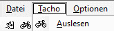

Help
Sigma Docking Station TL2012
Sigma Sport Computer xx.12*
Windows 10/11 64bit
Recommended: BikeDB 2025
* Currently BC12.12, BC16.12 and BC16.12 STS are supported
All computers of the Topline 2009/2012 series should be supported. If you manage to get another one working (see GitHub link in the sources), feel free to let me know the ID so I can make it publicly available (see Known Computer IDs).
Download the ZIP installation package from GitHub and extract it to any location.
Start “SigmaNotificationApp.exe”, create a shortcut if needed.
Start the application when the Sigma Docking Station is connected.
Insert the computer with ride data. As soon as the message appears
that a computer has been detected, the data can be imported.

Either press Read Out in the Computer menu or click the bicycle icon.
Now all fields should be filled with the available data (depending on the computer type used).
These data can be saved by clicking the “Save” button.
The primary purpose of this application is only to read out the computer data. To use them effectively, it is recommended to use BikeDB 2026 to manage the bicycle data. This is a powerful management software for everything possible: different bicycles, routes, rides, etc.
The application generates a JSON file named “bikedata_YYYYMMDD-HHmm.json”. The timestamp corresponds to the time selected in the application's date and time settings. It is possible to backdate entries if the speedometer data is read out later. The exact time is not particularly important unless, for example, you want to log multiple rides in a single day—such as commuting to work, the return trip, and an evening tour.
However, the main purpose of this application is its use within BikeDB 2026, which is also available on my GitHub account (see sources). Alternatively, you can use BikeDB Trax 2026, which creates the same files on a smartphone. In that case, you would not need a Sigma speedometer or this application.
If you want to program your own solution, here is the C# class used to serialize the JSON file:
public class RideData
{
public string TachoName { get; set; }
public string BikeName { get; set; }
public DateTime Timestamp { get; set; }
public uint DistanceMeters { get; set; }
public uint TimeSeconds { get; set; }
public double MeanSpeedKmh { get; set; }
public double MaxSpeedKmh { get; set; }
public byte Cadence { get; set; }
public uint TripSectionDistanceMeters { get; set; }
public uint TripSectionTimeSeconds { get; set; }
public double MinAltitudeMeters { get; set; } = 0;
public double MaxAltitudeMeters { get; set; } = 0;
public double DistanceKm => DistanceMeters / 1000.0;
public TimeSpan Duration => TimeSpan.FromSeconds(TimeSeconds);
public TimeSpan TripSectionDuration => TimeSpan.FromSeconds(TripSectionTimeSeconds);
}
The application automatically stores the following settings:
Window position and size
Program status (window mode or minimized)
Last used computer (name and serial number)
List of available bicycles
Language (German/English)*
* Note: BikeDB2026 is currently available only in German
RUST program by Alfonso Martone |
|
GitHub link for the Sigma Notification App |
|
Github link BikeDB 2026 (current version: BikeDB 2026) |
|
Github link BikeDB Trax 2026 |
BC 12.12 |
0x12 |
BC 16.12 |
0x15 |
BC 16.12 STS |
0x16 |
tbd |
|
When using other speedometers they have to be added to SigmaReader.cs:
public enum BikeComputerModel
{
Unknown = 0,
BC1612 = 0x15,
BC1212 = 0x12,
BC1612_STS = 0x16
}